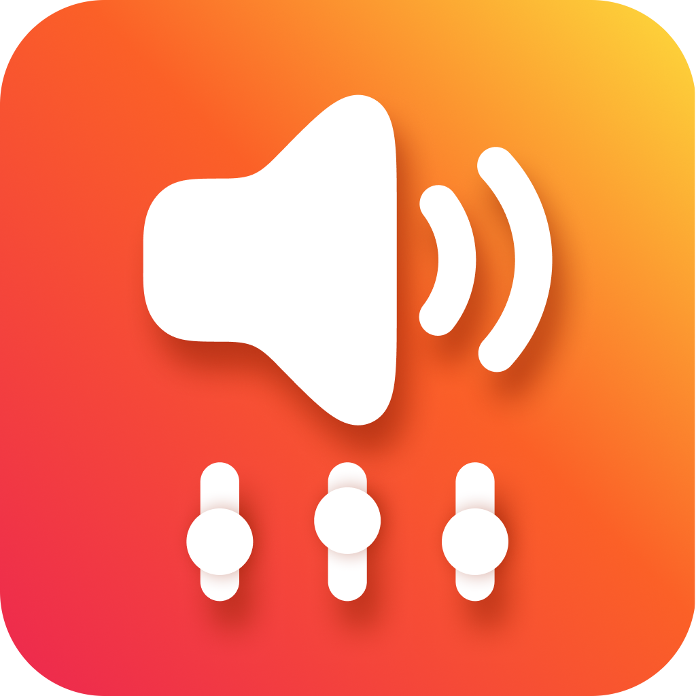
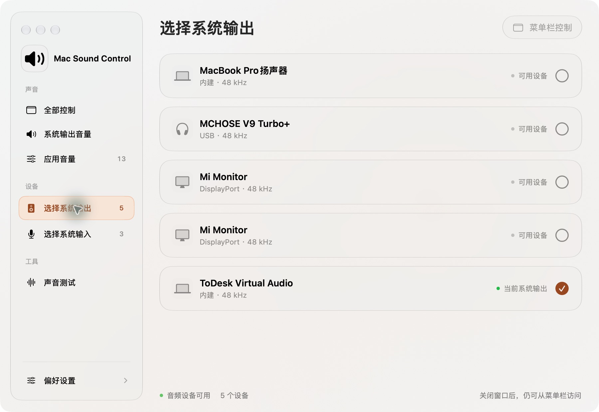

整个系统，一次调好。
调整当前系统输出音量，一键静音。菜单栏扬声器用静音与三档弧线，提示当前音量。

Mac Sound Control不必离开正在做的事。
点开菜单栏，就能调节每个应用的音量、切换耳机，以及确认麦克风。
macOS 14+ · Apple Silicon 与 Intel
分应用音量需要 macOS 15+ 及系统音频录制权限
当前下载：1.0.10 · 下方新版界面与快捷键改进将在后续更新提供
菜单栏适合随时调一调；打开主界面，系统音量、应用、设备与声音测试各有位置。两处控制共享同一份设置。
调整当前系统输出音量，一键静音。菜单栏扬声器用静音与三档弧线，提示当前音量。
为已识别的音频应用分别保存 0–100% 音量。切回统一控制，再切回来，原来的设置还在。
主窗口可以随时收起，菜单栏持续提供控制。可按需设置开机启动；新版补齐常用 macOS 快捷键。
选对设备，确认输入，再放心开口。
内建、USB、蓝牙与显示器设备集中展示，当前输入输出就标在选择按钮旁边。

实时电平帮助检查麦克风。需要时开启输入常驻；声音测试由你启动，离开测试页即停止。

用 SwiftUI 与 AppKit 构建界面，CoreAudio 处理声音。无需注册，不采集遥测；音频仅在内存中实时处理，不录制、不上传。
部分 HDMI、DisplayPort 或外置设备没有可写的系统音量属性。仍然可以切换到这些设备，但需要使用显示器、扩音器或设备自己的音量控制。
列表显示已向 CoreAudio 注册音频进程、且能识别为常规 Mac 应用的软件。部分应用需先播放一次声音才会出现；特殊驱动或独占音频链路可能不支持独立控制。
关闭主窗口后，菜单栏控制和已开启的常驻功能继续运行。选择菜单里的“退出程序”，才会完全退出应用；新版也支持在主窗口使用 Command+Q。